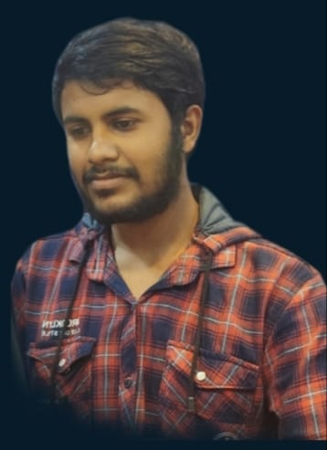

About Me
- I am excited to introduce myself as Buddala Sai Tarun from Narasannapeta,
Srikakulam district, Andhra Pradesh. I completed my B.Tech in computer science
from Aditya Institute of Technology and Management, Tekkali, in 2023 with a CGPA of 6.31.
- I possess good theoretical knowledge in DevOps, particularly in Docker, Kubernetes, Jenkins,
Ansible, Git, and Linux. Additionally, I have a strong foundation in the agile scrum methodology
and comprehensive project management skills geared towards iterative development and collaboration.
